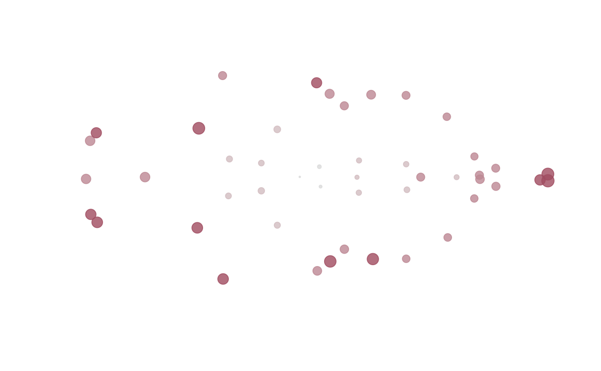

edma_fit.RdEstimate mean form and SigmaKstar matrix based on Lele (1991), Lele and Richtsmeier (1991) and Hu (2007).
edma_fit(x, B=0, ncores=getOption("Ncpus", 1L)) ## generics Meanform(object, ...) SigmaKstar(object, ...) get_fm(object, ...) ## methods # S3 method for edma_fit_np print(x, truncate=40, ...) # S3 method for edma_fit Meanform(object, ...) # S3 method for edma_fit SigmaKstar(object, ...) # S3 method for edma_fit get_fm(object, sort=FALSE, level=0.95, ...) # S3 method for edma_fit confint(object, parm, level=0.95, ...) ## plot methods plot_3d(x, ...) # S3 method for edma_fit plot(x, ...) # S3 method for edma_fit plot_2d(x, ...) # S3 method for edma_fit plot_3d(x, ...) # S3 method for edma_fit plot_ord(x, ...) # S3 method for edma_fit plot_clust(x, ...) ## distance manipulation # S3 method for edma_fit as.dist(m, diag=FALSE, upper=FALSE) # S3 method for dist stack(x, ...)
| x, object, m | an EDMA data object of class 'edma_data'. |
|---|---|
| B | nonnegative integer, the number of bootstrap replicates. |
| ncores | positive integer, the number of cores to use when bootstrapping.
Use |
| truncate | numeric, number of characters to print for the object title. |
| sort | logical, if stacked distances are to be sorted, see Examples. |
| level | numeric, between 0 and 1, alpha level for confidence interval. |
| parm | a specification of which parameters are to be given
confidence intervals, either a vector of numbers or a vector of names.
See |
| diag, upper | logical, indicating whether the diagonal
and the upper triangle of the distance matrix should be printed.
See |
| ... | other arguments passed to methods. E.g.
for |
The function estimates mean form and SigmaKstar matrix based on Lele (1991), Lele and Richtsmeier (1991) and Hu (2007).
edma_fit returns and EDMA fit object of class 'edma_fit'.
.edma_fit_np is the workhorse function behind edma_fit.
stack.dist takes any distance matrix of class 'dist'
and turns that into a long form data frame with
columns row and col indicating the row and column
labels, dist giving the value in that cell.
Only returns the values from the lower triangle of the matrix.
get_fm is the intended user interface to extract
the form matrix (FM) from EDMA fit objects.
This has the stacked distances based on the mean form.
When the object has bootstrap replicates,
get_fm also returns confidence intervals
for the distances based on bootstrap and the confint method.
Meanform extracts the mean form (K x D) matrix,
SigmaKstar extracts the corresponding uncertainties
(K x K) based on the EDMA fit object.
plot and plot_2d produces a 2D plot of the mean form.
2D projection is used in case of 3D landmark data based on
metric multidimensional scaling.
plot_3d use the rgl package to make a 3D plot.
The sizes of the dots correspond to
square root of the SigmaKstar diagonal elements.
The plot_ord and plot_clust
produce plots based on dissimilarities among specimens,
see plot_ord.edma_data for details.
Lele, S. R., 1991. Some comments on coordinate-free and scale-invariant methods in morphometrics. American Journal of Physical Anthropology 85:407--417. <doi:10.1002/ajpa.1330850405>
Lele, S. R., and Richtsmeier, J. T., 1991. Euclidean distance matrix analysis: A coordinate-free approach for comparing biological shapes using landmark data. American Journal of Physical Anthropology 86(3):415--27. <doi:10.1002/ajpa.1330860307>
Hu, L., 2007. Euclidean Distance Matrix Analysis of Landmarks Data: Estimation of Variance. Thesis, Master of Science in Statistics, Department of Mathematical and Statistical Sciences, University of Alberta, Edmonton, Alberta, Canada. Pp. 49.
EDMA data: read_xyz
Parametric fit: SigmaK_fit
Form difference: edma_fdm
Growth difference: edma_gdm
file <- system.file( "extdata/crouzon/Crouzon_P0_Global_MUT.xyz", package="EDMAinR") x <- read_xyz(file) x <- x[,,1:10] # 10 specimens ## nonparametric fit fit <- edma_fit(x, B=9) fit#> EDMA nonparametric fit: Crouzon P0 MUT #> Call: edma_fit(x = x, B = 9) #> 3 dimensions, 47 landmarks, 10 replicates, 9 bootstrap runs#> num [1:47, 1:3] -0.753 -4.25 0.54 2.79 1.979 ... #> - attr(*, "dimnames")=List of 2 #> ..$ : chr [1:47] "amsph" "bas" "cpsh" "ethma" ... #> ..$ : chr [1:3] "X" "Y" "Z"#> num [1:47, 1:47] -0.000789 -0.000863 -0.002257 -0.00254 -0.000231 ... #> - attr(*, "dimnames")=List of 2 #> ..$ : chr [1:47] "amsph" "bas" "cpsh" "ethma" ... #> ..$ : chr [1:47] "amsph" "bas" "cpsh" "ethma" ...#> 'edma_dist' num [1:1081] 3.56 1.54 3.61 2.84 4.44 ... #> - attr(*, "Size")= int 47 #> - attr(*, "Labels")= chr [1:47] "amsph" "bas" "cpsh" "ethma" ... #> - attr(*, "Diag")= logi FALSE #> - attr(*, "Upper")= logi FALSE #> - attr(*, "method")= chr "euclidean" #> - attr(*, "call")= language dist(x = Meanform(m), diag = diag, upper = upper)#> 'data.frame': 1081 obs. of 3 variables: #> $ row : Factor w/ 46 levels "bas","cpsh","ethma",..: 1 2 3 4 5 6 7 8 9 10 ... #> $ col : Factor w/ 46 levels "amsph","bas",..: 1 1 1 1 1 1 1 1 1 1 ... #> $ dist: num 3.56 1.54 3.61 2.84 4.44 ...#> row col dist lower upper #> 1 bas amsph 3.564776 3.519652 3.599500 #> 2 cpsh amsph 1.536155 1.515508 1.575590 #> 3 ethma amsph 3.611062 3.580715 3.635385 #> 4 ethmp amsph 2.844704 2.818132 2.869864 #> 5 laalf amsph 4.439686 4.408412 4.480552 #> 6 lasph amsph 1.685653 1.658461 1.720895#> row col dist lower upper #> 435 rnsla locc 10.44243 10.31159 10.52986 #> 357 opi lnsla 10.43767 10.33100 10.52484 #> 855 rnsla opi 10.43731 10.31358 10.52496 #> 364 rocc lnsla 10.42825 10.29299 10.52153 #> 342 locc lnsla 10.41463 10.29985 10.50194 #> 854 rmaxi opi 10.40513 10.34993 10.49313#> row col dist lower upper #> 400 rnslp lnslp 0.1360938 0.1264484 0.1512832 #> 362 rnsla lnsla 0.2260131 0.2004465 0.2279538 #> 977 roci rocc 0.5124857 0.4770010 0.5295113 #> 416 loci locc 0.5153279 0.4825952 0.5262041 #> 127 rpsh cpsh 0.5253504 0.5015436 0.5496708 #> 105 lpsh cpsh 0.5722943 0.5498048 0.5989530plot_ord(fit)plot_clust(fit)plot(fit)plot_2d(fit)